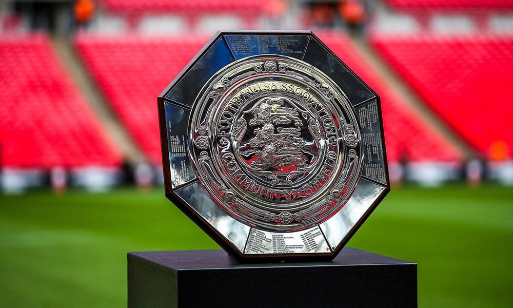

COMMUNITY SHIELD

La Community Shield es una final que la disputa el campeon de Premier League y el campeon de Fa Cup, dando comienzo el año 1908, llamandose Charity Shield hasta 2001 donde tomo el nombre actual ( Community Shield ).
RANKING DE MAXIMOS GANADORES
| EQUIPO | COPAS |
|---|---|
| Manchester United | 21 |
| Liverpool | 16 |
| Arsenal | 16 |
| Everton | 9 |
| Tottenham | 7 |
| Manchester City | 6 |
| Chelsea | 4 |
| Wolverhampton | 4 |
| West Bromwich | 2 |
| Leeds United | 2 |
| Burnley | 2 |
| Leicester City | 2 |
| Newcastle | 1 |
| Aston Villa | 1 |
| Blackburn Rovers | 1 |
| West Ham | 1 |
| Sheffield Wednesday | 1 |
| Portsmouth | 1 |
| Sunderland | 1 |
| Nottingham Forest | 1 |
| Brighton | 1 |
| Huddersfield | 1 |
| Cardiff City | 1 |
| Bolton | 1 |
| Derby County | 1 |
TODOS LOS GANADORES
| AÑO | EQUIPO |
|---|---|
| 2022 | Liverpool (16) |
| 2021 | Leicester City (2) |
| 2020 | Arsenal (16) |
| 2019 | Manchester City (6) |
| 2018 | Manchester City (5) |
| 2017 | Arsenal (15) |
| 2016 | Manchester United (21) |
| 2015 | Arsenal (14) |
| 2014 | Arsenal (13) |
| 2013 | Manchester United (20) |
| 2012 | Manchester City (4) |
| 2011 | Manchester United (19) |
| 2010 | Manchester United (18) |
| 2009 | Chelsea (6) |
| 2008 | Manchester United (17) |
| 2007 | Manchester United (16) |
| 2006 | Liverpool (15) |
| 2005 | Chelsea (5) |
| 2004 | Arsenal (12) |
| 2003 | Manchester United (15) |
| 2002 | Arsenal (11) |
| 2001 | Liverpool (14) |
| 2000 | Chelsea (4) |
| 1999 | Arsenal (10) |
| 1998 | Arsenal (9) |
| 1997 | Manchester United (14) |
| 1996 | Manchester united (13) |
| 1995 | Everton (9) |
| 1994 | Manchester United (12) |
| 1993 | Manchester United (11) |
| 1992 | Leeds United (2) |
| 1991 | Arsenal (8) y Tottenham (7) |
| 1990 | Liverpool (13) y Manchester United (10) |
| 1989 | Liverpool (12) |
| 1988 | Liverpool (11) |
| 1987 | Everton (8) |
| 1986 | Everton (7) y Liverpool(10) |
| 1985 | Everton (6) |
| 1984 | Everton (5) |
| 1983 | Manchester United (9) |
| 1982 | Liverpool (9) |
| 1981 | Tottenham (6) y Aston Villa (1) |
| 1980 | Liverpool (8) |
| 1979 | Liverpool (7) |
| 1978 | Nottingham Forest (1) |
| 1977 | Manchester United (8) y Liverpool (6) |
| 1976 | Liverpool (5) |
| 1975 | Derby County (1) |
| 1974 | Liverpool (4) |
| 1973 | Burnley (2) |
| 1972 | Manchester City (3) |
| 1971 | Leicester City (2) |
| 1970 | Everton (4) |
| 1969 | Leeds United (1) |
| 1968 | Manchester City (2) |
| 1967 | Manchester United (7) y Tottenham (5) |
| 1966 | Liverpool (3) |
| 1965 | Manchester United (6) y Liverpool (2) |
| 1964 | Liverpool (1) y West Ham (1) |
| 1963 | Everton (3) |
| 1962 | Tottenham (4) |
| 1961 | tottenham (3) |
| 1960 | Burnley (1) y Wolverhampton (4) |
| 1959 | Wolverhampton (3) |
| 1958 | Bolton (1) |
| 1957 | Manchester United (5) |
| 1956 | Manchester united(4) |
| 1955 | Chelsea (1) |
| 1954 | Wolverhampton (2) y West Bromwich (2) |
| 1953 | Arsenal (7) |
| 1952 | Manchester United (3) |
| 1951 | Tottenham (2) |
| 1949 | Portsmouth (1) y Wolverhampton (1) |
| 1948 | Arsenal (6) |
| 1938 | Arsenal (5) |
| 1937 | Manchester City (1) |
| 1936 | Sunderland (1) |
| 1935 | Sheffield Wednesday (1) |
| 1934 | Arsenal (4) |
| 1933 | Arsenal (3) |
| 1932 | Everton (2) |
| 1931 | Arsenal (2) |
| 1930 | Arsenal (1) |
| 1928 | Everton (1) |
| 1927 | Cardiff City (1) |
| 1922 | Huddersfield (1) |
| 1921/22 | West Bromwich (1) |
| 1912 | Blackburn Rovers (1) |
| 1911 | Manchester United (2) |
| 1910 | Brighton (1) |
| 1909 | Newcastle (1) |
| 1908 | Manchester United (1) |